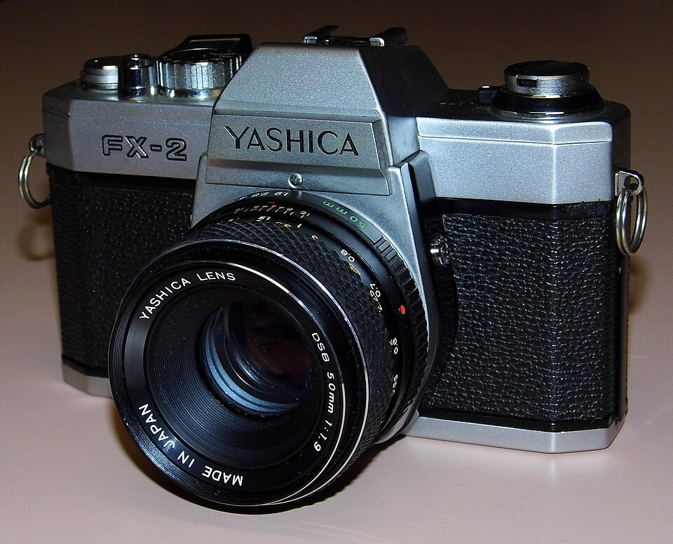

Vintage, antique or retro?
People use these words a lot, but they do not mean the same thing. Here is a short guide:
- Vintage
- Something from an earlier time, often at least 20 years old.
- Antique
- Something that is usually 100 years old or more.
- Retro
- Something new that is made to look old.

Why does vintage feel special?
A vintage item is more than just something old. It carries the feel of the time it was made in. A record player from the 1950s, a coat from the 1970s or a camera from your grandparents' time can make us think about how life used to be. Many people say that holding a vintage item feels like holding a small piece of history.
Vintage things are also easy to tell apart from new ones. They often have different shapes, colours and materials. Old radios were made of wood and metal, while many new ones are made of plastic. This is one reason why vintage things stand out in a modern home.
How to spot a vintage item
- Look for a date or a maker's mark.
- Check how it was made. Is it metal or wood?
- Ask yourself if it is really old or just copying the old style.
Want to read more? Have a look at the Wikipedia page about the word vintage.
Vintage through the decades
| Decade | Popular thing | Style |
|---|---|---|
| 1950s | Record players | Rock and roll |
| 1960s | Instant cameras | Bright patterns |
| 1970s | Cassette tapes | Flared trousers |
| 1980s | Portable tape players | Neon colours |
Vintage in everyday life
Vintage is not only for museums. People use it every day. Some people wear vintage clothes because the patterns and fabrics are hard to find in shops today. Others decorate their homes with old furniture, lamps and clocks. Music fans still play vinyl records because they enjoy the big cover art and the ritual of putting a record on.
You can also see vintage style in new things. Cafes use old signs and posters, and many phone apps can make a photo look like it was taken on old film. This is called retro, and it shows how much people still love the past.